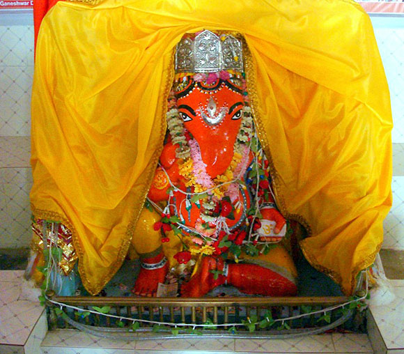

Political History of Kashmir
Islamic Fundamentalism, Ethnic Cleansing, Legal Documents
Islamic Fundamentalism, Ethnic Cleansing, Legal Documents
The religious practices of Hindus of Kashmir (popularly known as Kashmir Pandits revolve around the worship of Shiva and Shakti. All other deities (gods and goddesses) of the traditional Hindu pantheon are worshipped as various manifestations of Shiva and Shakti. Shiva is the Supreme Lord of the universe and Shakti, the Universal Mother Goddess, is his eternal companion. Bhairavas and Ganas are also his divine companions and they are also worshipped with him on important festivals, such as Shivaratri. There are numerous Shiva shrines in Kashmir, such as Amareshvara, Vijayeshvara, Sureshvara, Harsheshvara, Mahaadeva, Bhuteshvara, Haramukheshvara. The shrines dedicated to Shakti are Tripurasundari, Trisandhyaa, Jvaalaamukhi, Shailaputri, Shaarikaa, Shaarada, Rajni, and Khirbhavaani.
The religious philosophy of Kashmiri Hindus is rooted in Kashmiri Shaivism, a school of Shiva philosophy that originated near Kailasha in Himalayas around 400 AD. The first teacher of this school was Tryambakaditya, a disciple of sage Durvasas. Sangamaditya, the sixteenth descendent in the line of Tryambakaditya, later settled in Kashmir valley around 800 AD. His fourth descendent, Somananda, extracted the principles of monistic Shiva philosophy from the scriptures and incorporated them in his own work, Shivadrishti, which is the first philosophical treatise on Kashmiri Shaivism. Later a galaxy of illumined sages, such as Vasugupta, Kallata, Utapaladeva, and Abinavagupta further refined this philosophy. The philosophy of Kashmiri Shaivism is generally called Trika Shastra, since it is a philosophy of the Triad: Shiva, Shakti, and Nara (the bound individual self). The literature of the Trika System of Kashmir comprises of three categories: the Agama Shastra, the Spanda Shastra, and the Pratyabhijna Shastra.
Kashmiri Shaivism, also known as Pratyabhijna (meaning "recognition") school of Shaivism, adopts a purely monistic metaphysical position. It considers the Supreme Lord, called Shiva or Maheshvara, as the Supreme Reality, which is innermost as well as transcendent. As a conscious and active principle, the individual self (atman) is identical with the Supreme Lord. Due to the influence of maya (ignorance) the individual self forgets its divine nature, becomes liable to limitation and bondage, and thinks itself to be different from the Supreme Lord. Thus one's mukti (spiritual freedom) lies in one's clear recognition (Pratyabhijna) of one's identity with the Supreme Lord. In Kashmiri Shaivism we find a type of religious thought which synthesizes pluralism, dualism, and the Buddhist doctrine of Shunya, and develops a nondualist philosophy which is sweet, sublime and constructive. This philosophy is closer to the theism of the Bhagvad Gita than to the nihilism of Buddha.
Kashmiri Shaivism is free from restrictions of caste, creed, and gender. Any devout aspirant can have access to both the theory and practice of this philosophy. In Kashmiri Shaivism, practice of religion is considered more important than theological debates and discussions. Kashmiri Shaivism does not advocate a life of renunciation (Sannyasahood) or profession of monks, but recommends an active householder's life with daily practice of worship, yoga and meditation. The use of outward symbols, such as yellow and orange robes, matted hair, and ashes are prohibited. Worldly enjoyment as a goal of worldly life is recognized and respected, but a spiritual path aimed at harmonizing bhukti (worldly enjoyment) and mukti (liberation) is advocated. Kashmiri Shaivism does not advocate suppression of one's emotions and instincts, but provides a spiritual path aimed at their sublimation towards the ultimate goal of spiritual freedom.


Hindu DharmaHindu Dharma explains the symbolism of the Hindu deities and includes nine beautiful color pictures of the popular Hindu deities. These pictures can be used for daily puja (worship) in the home shrines by the devotees. The book also includes the historic address of Swami Vivekananda on Hinduism at the 1893 World Parliament of Religions in Chicago. (Click to know more.) |

Hindu DeitiesJust as a single force in space can be mathematically conceived as having various spatial components, the Supreme Being or God, the personal form of the Ultimate Reality, is conceived by Hindus as having various aspects. A Hindu deity (god or goddess; note small g) represents a particular aspect of the Supreme Being. (Click to know more.) |

Place of WorshipThe valley being sacred and called Rishi wari till now, abounds in sacred places, Tirthas and Asthans. Long ago at the dawn of civilisation when the sons of Rishi Kashyapa from plains came to settle here they brought with them their traditions, religion, mythology etc. (Click to know more.) |

Ancient and Modern Ascetics in KashmirThese saints belong to all times and to all nations. They transcend the bonds of communities and conventions, place and time. They are born to serve God by serving His creatures. A saint, a seer and a sage is, indeed an universal phenomenon. (Click to know more.) |

Rituals and CeremoniesThe ritual culture of the people of Kashmir grew from its Burzahom past and is, therefore, formed of several sediments; the basic sediments have their origin in the ritual structure of the Burzahom people and the people of Kashmir who lived through the Neelmat period. (Click to know more.) |

A Kashmiri Pandit MarriageKashmiris first match the teknis (horoscopes) of the prospective bride and groom. Besides this, the other factors which are taken into consideration while selecting a match are the background, status and moral character of the family of the prospective match and their close relatives. (Click to know more.) |

Lal Ded's VakhsKashmir has produced many saints, poets and mystics. Among them, Lal Ded is very prominent. In Kashmir, some people consider her a poet, some consider her a holywoman and some consider her a sufi, a yogi, or a devotee of Shiva. (Click to know more.) |

Kashmiri Hindus and Caste SystemsIt is generally accepted that all the Kashmiri Hindus belong to the same community or jati. Is that because they belong to a single caste or varna resulting from the conversion of the other castes to Islam? (Click to know more.) |

Nilamata PuranaThe Nilamata says that the land of Kasmira was thronged with ever-sportive and joyful people enjoying continuous festivities. Living amidst scenes of sylvan beauty they played, danced and sang to express their joys, to mitigate their pains, to please their gods and to appease their demons. (Click to know more.) |

Kashmiri ShaivismShaivism of Kashmir has developed between the eight and the twelfth centuries of the Christian era. This comparatively younger philosophy has tried to explain all such ambiguities which the ancient philosophers have failed to resolve. (Click to know more.) |

Kundalini - Articles by Gopi KrishnaKundalini is the guardian of human evolution and the key to the mystery of existence. There is nothing in the whole mass of knowledge, gathered by mankind so far, of such paramount importance as this. (Click to know more.) |

Ganesh AstutiHe who is son of the daughter of the kingdom of mountains Parvati, He who is leader of the multitude of Gods, He who is dear to Shiva, He who has one tusk, He who has a curved trunk, He who has snake around his neck as yagnopavit. (Click to know more.) |

Henzae: A Folk Genre Viewed AfreshHENZAE seems to be the oldest extant folk genre of Kashmiri verse. Alongside the proverb and the riddle it certainly is one of the earliest items of folklore in the Kashmiri language. It signifies a conventional type of the ceremony chant called vanavun. (Click to know more.) |

Devotional Songs |